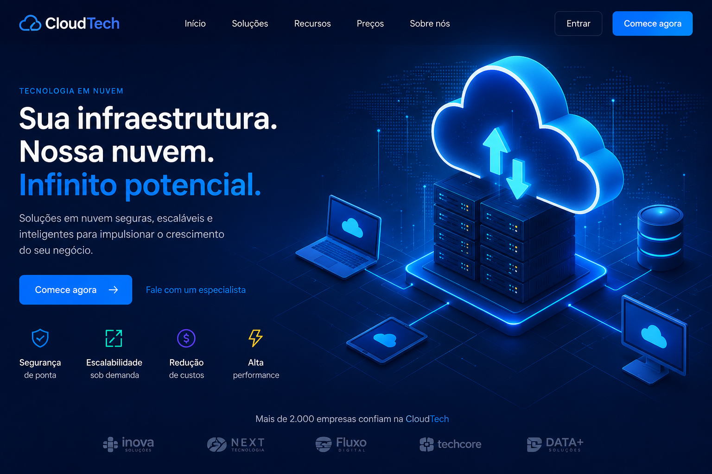
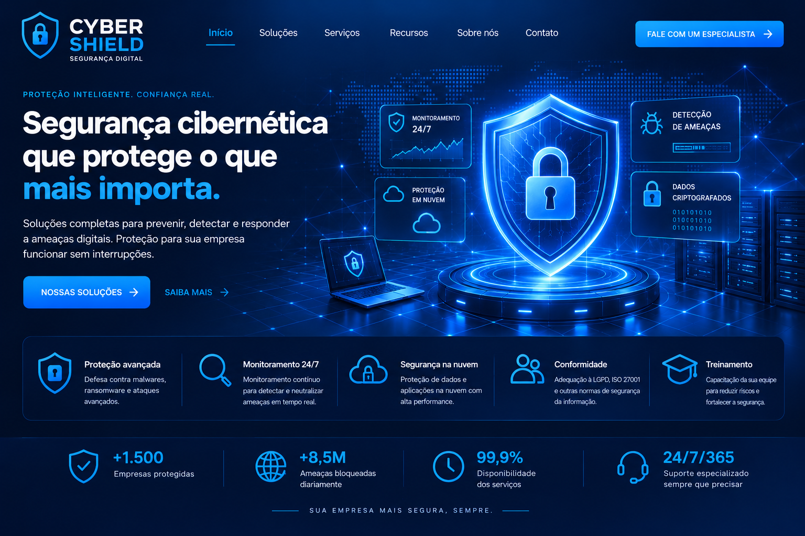
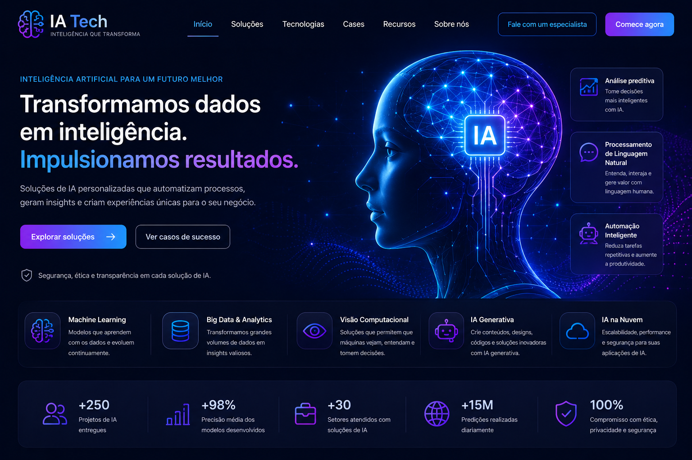

Computação em Nuvem
Fornece capacidade de processamento e armazenamento escalável sob demanda. É a base onde os modelos de IA são treinados e onde os sistemas de segurança são implantados globalmente.

Segurança Cibernética
Analisa grandes volumes de dados em tempo real, automatiza decisões e otimiza processos. Na nuvem, a IA processa informações a uma velocidade impossível para humanos.

Inteligência Artificial
Protege a integridade, disponibilidade e confidencialidade dos dados e sistemas hospedados na nuvem e processados pela IA.
Como essas 3 áreas se conectam?
A sinergia entre essas três tecnologias redefiniu a gestão de TI corporativa. A junção de IA e Segurança Cibernética viabiliza a defesa proativa, utilizando algoritmos de Machine Learning para analisar o tráfego de rede e mitigar ameaças antes que se concretizem. Ao mesmo tempo, a fusão de Nuvem e IA resulta no conceito de IA como Serviço (AIaaS), democratizando o acesso a modelos avançados sem a necessidade de supercomputadores locais. Por fim, a relação entre Nuvem e Segurança Cibernética estabelece o Modelo de Responsabilidade Compartilhada, onde o provedor protege a infraestrutura física enquanto o cliente cuida da gestão de dados e acessos.